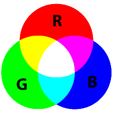
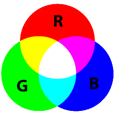

Cours et activités
Ch.1: Python
 Ch.2: Internet
Ch.3: Le Web
Ch.4: Les Réseaux Sociaux
Ch.5: Le Traitement de données
Ch.6: La photografie numérique

Ch.7: La géolocalisation
Ch.8: Les objets connectés
Ch.2: Internet
Ch.3: Le Web
Ch.4: Les Réseaux Sociaux
Ch.5: Le Traitement de données
Ch.6: La photografie numérique

Ch.7: La géolocalisation
Ch.8: Les objets connectés
Projets
1. Ma p'tite page web
2. Page web de SNT